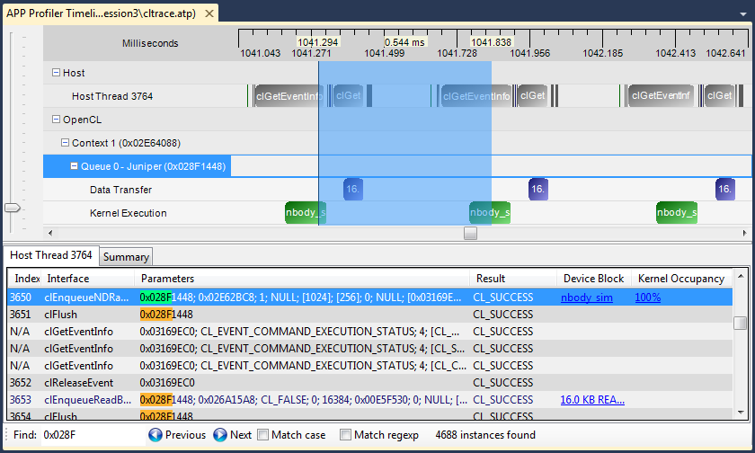

This panel shows the timeline and API trace data for a profile session. To get the .atp file of the result, browse to the location of the file shown in the title of the panel. To quickly navigate to the location of the file, right click the session in the Session Explorer, and select "Open Containing Folder" from the menu. See Description of Output Files for a detailed description of the format of this file.
From the OpenCL™ application trace data, you can:
- Discover the high level structure of the application with the Timeline View. From this view, you can determine the number of OpenCL™ contexts and command queues created and the relationships between these items in the application.
- Determine if the application is bound by kernel execution or data transfer operations.
- View and debug the input parameters and output results for all API calls made by the application with the API Trace View.
The panel is divided into two sections. The upper section shows the application timeline, and the lower section shows the API trace.
The application timeline provides a visual representation of the execution of the application. Along the top of the timeline is the time grid which shows the total elapsed time of the application, in milliseconds. Timing begins when the first OpenCL™ call is made by the application and ends when the final OpenCL™ call is made. Directly below the time grid, each host (OS) thread that made at least one OpenCL™ call is listed. For each host thread, the OpenCL™ API calls are plotted along the time grid, showing the start time and duration of each call. Below the host threads, an OpenCL™ tree shows all contexts and queues created by the application, along with data transfer operations and kernel execution operations for each queue.
The Timeline View can be useful for debugging your OpenCL™ application. Some examples are:
- You can easily confirm that the high level structure of your application is correct. By examining the timeline, you can verify that the number of queues and contexts created matches your expectations for the application.
- You can also confirm that synchronization has been performed properly in the application. For example, if kernel A execution is dependent on a buffer operation and outputs from kernel B execution, then kernel A execution should appear after the completion of the buffer execution and kernel B execution in the time grid. It can be hard to find this type of synchronization error using traditional debugging techniques.
- You can also confirm that the application has been utilizing the hardware efficiently. For example, the timeline should show that non-dependent kernel executions and data transfer operations occur simultaneously.
The application timeline supports zooming, navigating and expanding/collapsing, providing many ways to view and analyze the profile result.
Zooming
- When first opened, the timeline view is fully zoomed out, so that the entire application timeline is visible in the timeline. It can be useful to zoom in to specific parts of the timeline in order to better understand the profiling data. As you zoom in and out, the time grid at the top changes to display the timestamp of the currently displayed timeline subsection.
- 1) Manual zoom - To manually zoom in and out, use the vertical trackbar located along the left side of the timeline. The current zoom pivot point (displayed as a vertical line over the entire timeline) represents the point in the timeline into which the view will be zoomed. By default, the zoom pivot point tracks the mouse cursor as it moves over the timeline. Using the OpenCL™ Trace Page in the APP Profiler Settings Window, you can disable this mouse tracking. When mouse tracking is disabled, you can change the location of the zoom pivot point by clicking anywhere within the timeline. The current timestamp represented by the zoom pivot is displayed as a hint in the grid displayed at the top of the timeline. You can also use the mouse wheel to manually zoom in and out.
- 2) Zoom into specific API call - To zoom into a particular API call, you can double click the API call in the API Trace list
- 3) Zoom into specified region - To zoom into a specific region of the timeline, hold down the Control key and drag the mouse to highlight a specific region. When you release the mouse button, the timeline will be zoomed into the highlighted region. While you are dragging, hints will be displayed in the grid at the top of the timeline, showing the start and end timestamps for the selected region.
- 4) Zoom into specific block - To zoom into a particular block shown in the timeline, hold down the Control key on the keyboard and right click on a block.
Navigation
- When the timeline is zoomed in, you can navigate to different parts of the timeline. You can use either the horizontal scrollbar located along the bottom of the timeline, or you can click and drag the mouse to pan the timeline within the viewable area.
Expanding and Collapsing the timeline tree
- When the timeline is first displayed, its tree is fully expanded. It may be useful to collapse parts of the tree in order to limit the amount of data shown. Use the treeview controls within the timeline to collapse or expand parts of the timeline tree.
There are several ways to view more information about items shown in the timeline view.
- 1) Tooltip hints - Hover the mouse over a block shown in the timeline, and a tooltip hint will appear giving additional details about that block.
- 2) Navigating to the API trace - Click an API block in a Host Thread row, and that block will be selected in the API Trace, where additional details for that particular API call will be shown.
The API trace is a list of all the OpenCL™ API calls made by the application. Each host thread that makes at least one OpenCL™ call is listed in a separate tab. Each tab contains a list of all the API calls made by that particular thread. For each call, the list displays the index of the call (representing execution order), the name of the API function, a semi-colon delimited list of parameters passed to the function and the value returned by the function. When displaying parameters, the profiler will attempt to dereference pointers and decode enumeration values to give as much information as possible about the data being passed in or returned from the function. Double-clicking an item in the API Trace list will display and zoom into that API call in the Host Thread row in the Application Timeline. For Enqueue API calls that result in either a kernel execution or a data transfer operation, there will be a clickable entry in the "Device Block" column. Clicking this entry will zoom into the corresponding timeline block under the OpenCL™ tree in the timeline. For Enqueue API calls that result in a kernel execution on a GPU, there will be a clickable value in the "Kernel Occupancy" column. Clicking this entry will open the
Kernel Occupancy Viewer, which will provide more information about the
kernel occupancy. If the option to Enable navigation to source code is checked on the
OpenCL™ Trace Page, you can right click any item in the API trace and choose
Go to source code from the context menu. This will use the symbol information generated during the trace and navigate to the source code location of the API call.
The API Trace allows you to analyze and debug the input parameters and output results for each API call. For example, you can easily check that all the API calls are returning CL_SUCCESS, or that all the buffers are created with the correct flags. You can also identify redundant API calls using the API Trace.
You can search for text in the API trace using the Find controls located below the API list. Enter the text you want to search for in the search box, and the API Trace will automatically start searching for that text. Once the search is complete, the number of matches found will be displayed and each match will be highlighted within the API trace. You can navigate to the next match found by either clicking the "Next" button or pressing the "Enter" key. You can navigate to the previous match found by either clicking the "Previous" button or pressing "Shift-Enter" on the keyboard. You can also specify if you want to do a case-sensitive search or if you want to use a regular expression in the search text.
Colors are used in both the application timeline and the API trace to help distinguish data transfer and kernel dispatch. Green is used to color kernel dispatch items -- both the enqueue calls from the host and the kernels themselves on the GPU. Shades of blue are used to color data transfer items, with slight color variations for read, write, and copy calls.